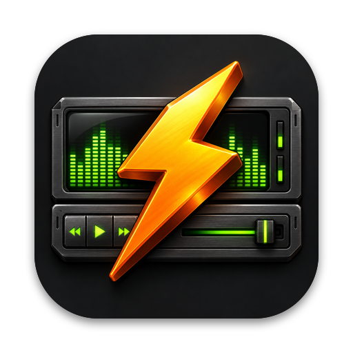
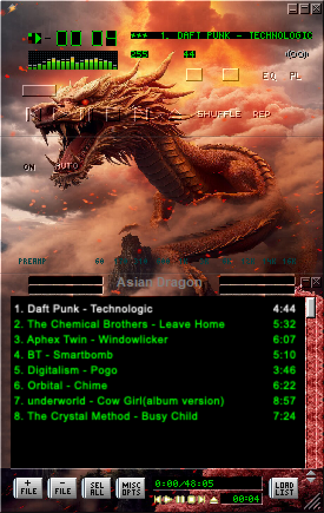
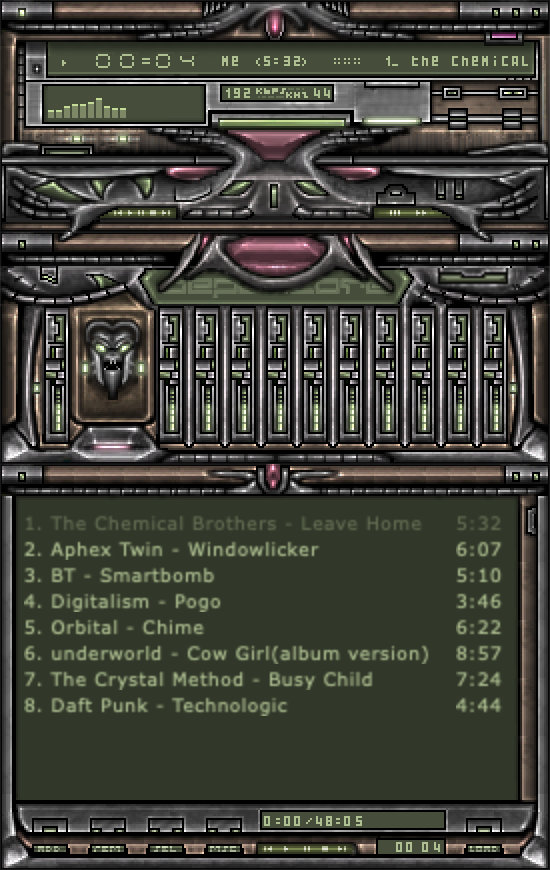
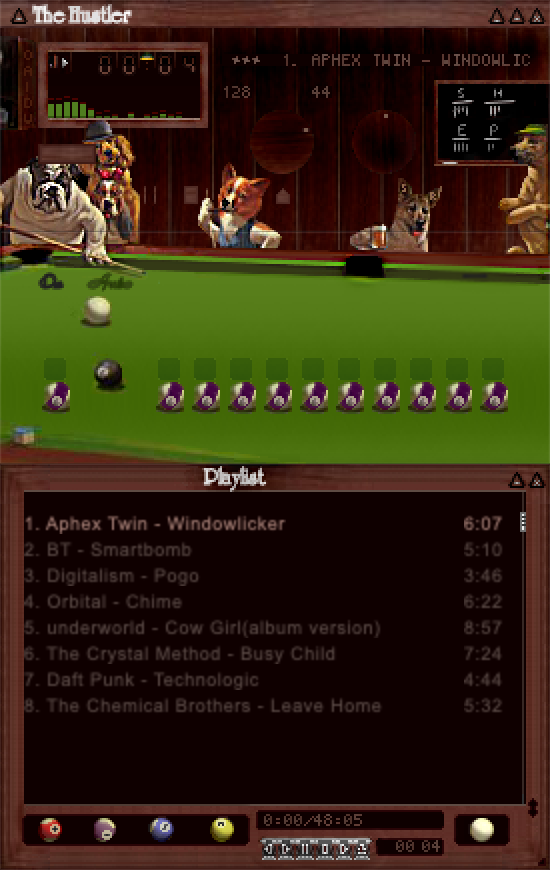
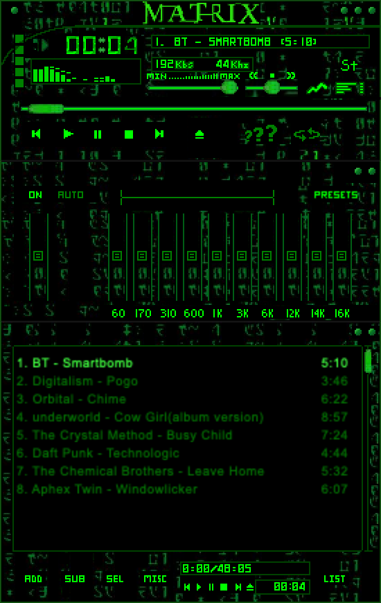
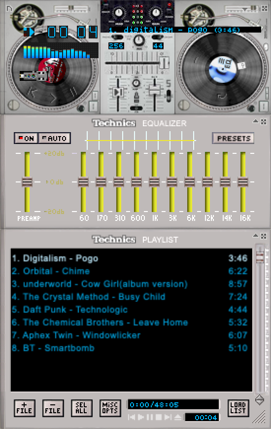

Roadie
A Winamp-skinned music player for your Mac.
Point Roadie at a folder of songs and play them in the classic 2.x skins you remember. On first launch it helps you pick your music folder and grab skins from the Winamp Skin Museum. Have a Music Assistant server? Roadie can stream that library too, here or on any speaker in the house.






Your skins, your library, your speakers.
Classic .wsz skins
Main, EQ and playlist windows with docking, shade modes and the visualizer.
Your music folder
Choose a folder of songs on your Mac and play it. No server or account needed.
Music Assistant, if you use it
Optional: browse and play your Music Assistant library, show up there as a speaker, or send playback to any other player.
Skin browser and Museum
Flip through your skins folder, or download from the Winamp Skin Museum in one click.
Quick Look for skins
See a .wsz file's skin in Finder thumbnails and previews.
Updates itself
New versions arrive through Sparkle, signed and notarized.
What you need
- 01macOS 14 Sonoma or later.
- 02A Mac with Apple silicon or an Intel processor.
- 03A folder of music on your Mac.
- 04Some skins. Bring your own .wsz files or download them from the Museum.
- 05Optional: a Music Assistant server on your network, or reachable over HTTPS, to stream its library.